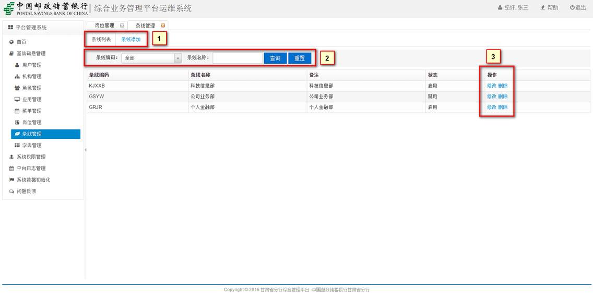
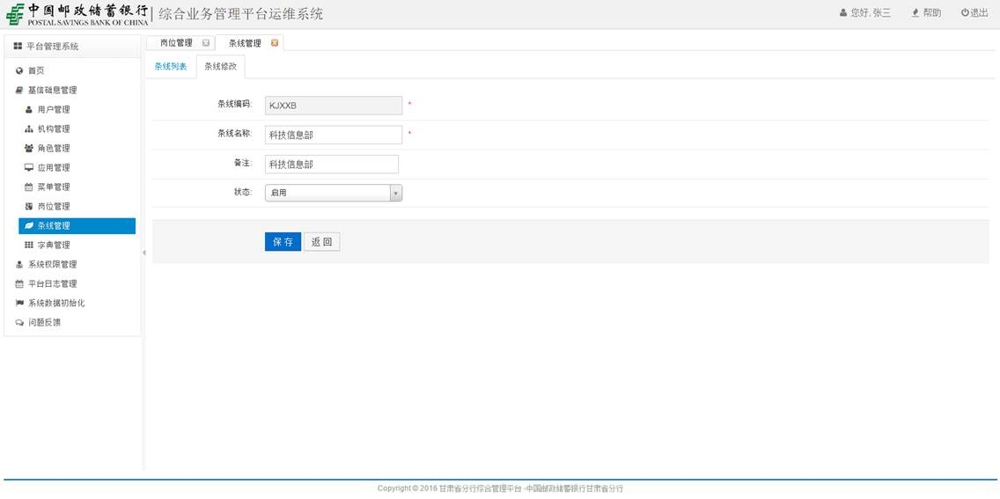
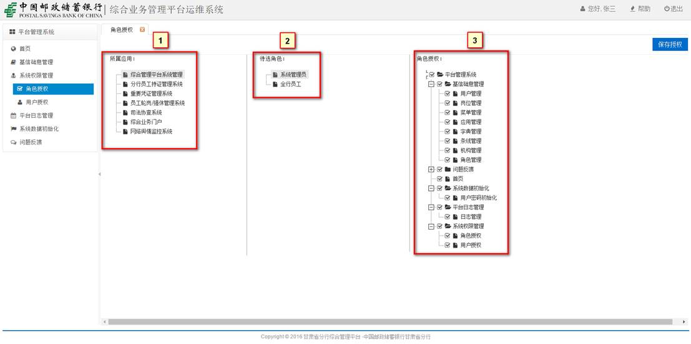

甘肃省分行
综合业务管理系统
操作手册
杭州米阳科技有限公司
2016年6月
目录
第一章引言
1.1编写目的：
本操作手册为甘肃省邮政储蓄银行综合业务管理系统操作手册。编写本操作手册的目的是充分叙述本软件所能实现的功能及其使用方式，以便使用者了解本软件的使用范围和使用方法，并为软件的维护和更新提供必要的信息。
1.2 系统用户说明
n 系统管理员:管理各个系统基本信息、设置各个系统管理员、各个系统用户角色、查看系统日志、重置所有用户信息等。
n 普通员工：管理和查看本人个人信息。
1.3.使用环境：
系统部署在邮政储蓄银行内网工作网络中，请在工作网络环境下使用。
1.3.1操作系统：
支持windows xp、windows 7、windows 10。
1.3.2浏览器支持：
支持谷歌浏览器（Chrome）、火狐浏览器、360浏览器、IE浏览器（最低版本IE8）等。
推荐使用：谷歌浏览器（Chrome）。
1.3.3地址输入：
输入地址时请注意大小写。
1.4如何使用：
1.4.1在浏览器地址中，输入：
http://10.249.240.11:8800/GPIPortal，进入综合业务门户系统，在系统应用区域点击综合业务管理系统图标，进入系统。
1.4.2登录：
登录账号为：个人身份证号（字母‘X’必须为大写），初始密码默认为：123456
第二章操作说明
2.1首页：
2.2基础信息管理
2.2.1用户管理
1） 用户列表展示、用户添加。
2） 搜索区，输入相应过滤信息，查询用户。
3） 操作区，对用户进行信息重置、修改用户信息、删除用户操作。
2.2.2机构管理
1） 机构列表展示、机构添加。
2） 操作区，对机构进行添加、修改、删除等操作。
修改机构：
 删除机构：
删除机构：
注：删除机构时，需要逐级删除，当前需要删除的机构项中，不能包含下级机构。
2.2.3角色管理
1） 角色列表展示、角色添加
添加角色：
2） 搜索区，输入相应过滤条件，查询相应系统的角色。
搜索系统角色：
3） 操作区，对系统角色进行修改、删除操作。
修改角色：
删除角色：
2.2.4应用管理
1） 应用列表展示、应用添加
应用添加：
2） 操作区，对应用进行修改，删除操作
应用修改：
删除应用：
2.2.5菜单管理
1） 选项区，菜单列表展示、菜单添加
菜单添加：
2） 操作区，对菜单进行修改、删除。
菜单修改：
菜单删除：
2.2.6岗位管理
1） 选项区，岗位列表展示，岗位添加
岗位添加
2） 搜索区，输入过滤条件，检索相应的岗位
搜索：
3） 操作区，对岗位进行修改、删除操作
岗位修改：
岗位删除：
2.2.7条线管理

1） 选项区，条线列表展示，条线添加。
条线添加：
2） 搜索区，输入过滤条件，检索相应的条线。
条线搜索：
3） 操作区，对条线进行修改、删除操作。
修改条线：

条线删除：
2.2.8字典管理
1） 字典目录，点击相应的字典类型，展示当前字典类型下的所有子字典条目
2） 选项区，字典列表展示、字典添加
字典添加：
3） 操作区，对字典进行删除、修改
修改字典：
删除字典：
2.3系统权限管理
2.3.1角色授权

1） 选择相应系统应用
2） 显示当前应用的角色
3） 显示当前角色所具有的访问菜单权限
2.3.2用户授权
1） 选择相应系统应用
2） 显示当前系统所有的角色，点击相应角色
3） 列表展示当前角色下的所有用户，可对当前用户进行移除操作
4） 点击添加用户，添加用户到当前角色下
添加用户：
2.4平台日志管理
2.4.1日志管理
日志查询：
可对各个应用系统日志进行查询
2.5系统数据初始化
2.5.1用户密码初始化
初始化所有用户密码为123456
2.6问题反馈
2.6.1反馈
当系统出现问题时，可反馈问题给开发人员进行处理。
2.6.2问题列表

列表展示当前已反馈的问题